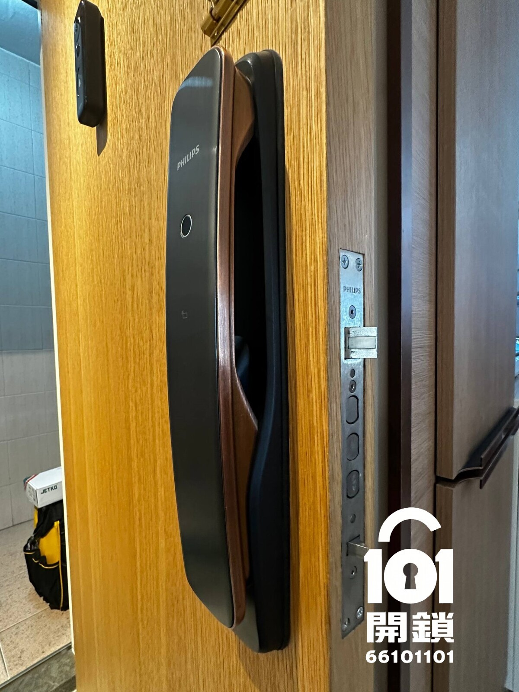
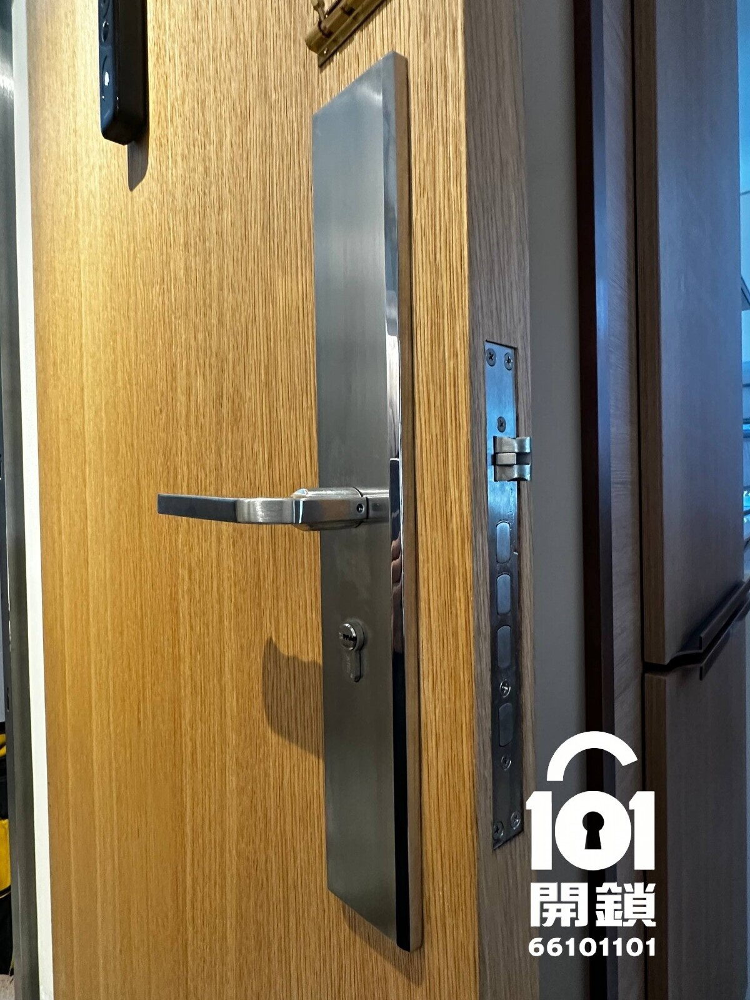
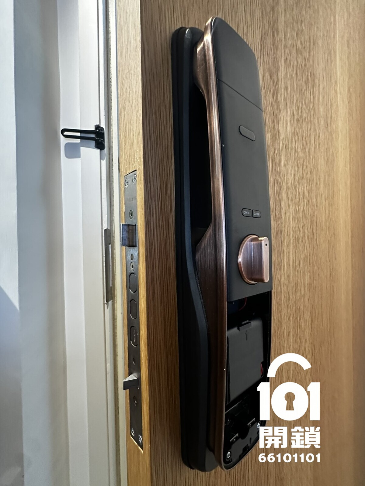
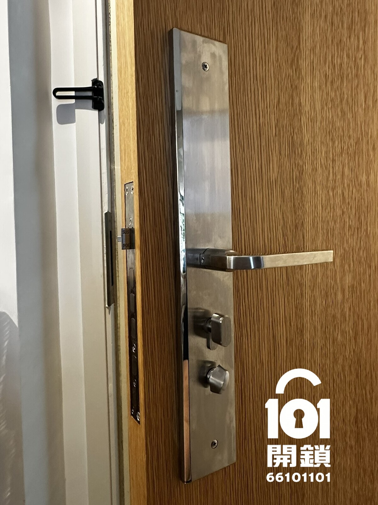

先看實證：同一個案的安裝前後對比
照片分別記錄門室外、門室內及門邊鎖體。這比只展示產品照更能協助了解完成後的可見效果。
門外：電子鎖面板 → 機械鎖面板
新機械鎖加長面板遮掩原有電子鎖面板位置。


門內：電子鎖面板 → 機械鎖面板
同時確認室內大面板能處理原有孔位。


個案可見的證據：此案例的前後照片顯示以較長面板完成轉換後的外觀；在此門身條件下，飛利浦電子鎖專用加長大面板遮蓋到原有電子鎖範圍，無需再作門面修補，避免修補後出現色差。
電子鎖拆咗有窿：甚麼情況可遮蓋？
「電子鎖轉機械鎖」不是單一尺寸替換。下表是初步判斷框架，目的是讓你知道師傅會看甚麼，而不是代替現場量度。
| 要核對的情況 | 較有機會以面板處理 | 可能要額外修補或另選方案 |
|---|---|---|
| 舊孔位置及跨度 | 可評估：孔位均落在新前後面板覆蓋範圍內。 | 需檢查：孔位超出面板邊緣、分散很遠，或原有壓印很明顯。 |
| 門身及表面 | 可評估：門面平整、沒有明顯崩邊或翹曲。 | 需檢查：木皮、飾面、金屬門或其他表面受損；修補後色差亦要預先說明。 |
| 門厚、鎖體與鎖距 | 可評估：新鎖體、鎖芯、門厚及門邊開孔可安全配合。 | 不可假設：即使同為 240 × 24 mm，鎖中、鎖距、固定孔及功能仍可能不同。 |
| 門框及開關門方向 | 可評估：門鎖與鎖口片對位正常，沒有其他干涉。 | 需檢查：左／右開、門框對位、天地勾或特殊防火門要求均可能影響方案。 |
手機可左右滑動查看完整判斷表。最終以雙方確認的報價為準。
電子鎖壞咗，應維修、換新電子鎖，還是還原機械鎖？
「壞咗」與「不想再用」是兩種不同需要。不要因電池或單一故障便預設必須拆除；先按使用目標及實際狀況選擇。
先診斷、開門或維修
適合電子鎖失靈、無法入門或操作異常的情況。先確認型號的原廠備援方式、機械匙或外接供電可能性，再決定維修或更換。
- 重點：先處理出入及安全
- 不應直接假定要轉回機械鎖
換新電子鎖
適合仍需要密碼、指紋或遙距功能的住戶。可比較新舊面板覆蓋範圍、保養、備援方式及日常使用習慣。
- 重點：功能、備援及保養
- 需核對舊孔與新面板相容性
還原機械鎖
適合明確不再使用電子功能、願意改回主動以鎖匙上鎖的住戶。先看相確認可否遮孔、是否需修補及整體費用。
- 重點：孔位、鎖體及完成外觀
- 需理解帶匙與主動上鎖的取捨
先傳四張相，才有可靠的初步答案
門外全景、門內全景、開門後的門邊鎖體，以及鎖口位置照片。方便的話亦可提供電子鎖品牌、型號及門厚，另請告知所在地區。請避免拍到鎖匙齒位或住址資料。
這次案例使用的機械鎖：可說明甚麼、不能說明甚麼
下列是現有資料可確認的產品資料。是否適合你的門，仍不應以本案例或品牌名稱直接推論。
- 前面板：約 450 mm × 70 mm（加長面板）
- 鎖體標示：240 mm × 24 mm
- 表面：砂銀色不鏽鋼面板
- 鎖匙安排：一般跟 5 條新鎖匙。如要選用 A+B／師傅匙系統，應先向我哋確認交匙數量、誰持有哪一類匙、可否配匙及日後管理方式。
- 保養：提供 14 日安裝售後，由完成安裝日起計，免費跟進安裝問題；但不涵蓋唔見鎖匙而需要開鎖服務、人為損壞或外力損壞。
WhatsApp 相片初評清單
清楚的相片可減少到場後才發現不相容的機會，亦可讓報價更接近實際安裝情況。
1. 門外全景
要拍到整塊外面板及其周邊門面，讓人看見原有孔位可能的範圍。
2. 門內全景
同樣要拍到整塊內面板及周邊，因為兩側的處理條件可能不同。
3. 門邊鎖體
開門後拍清楚鎖體、門厚及鎖體面板，方便初步判斷鎖體尺寸。
4. 鎖口位置
拍清楚門框鎖口及橫閂對位；方便的話亦可補充電子鎖品牌、型號及所在地區。